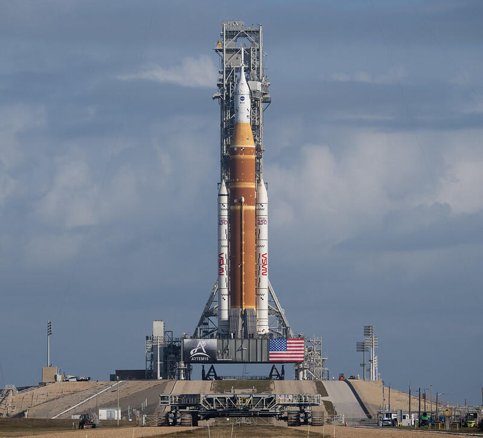
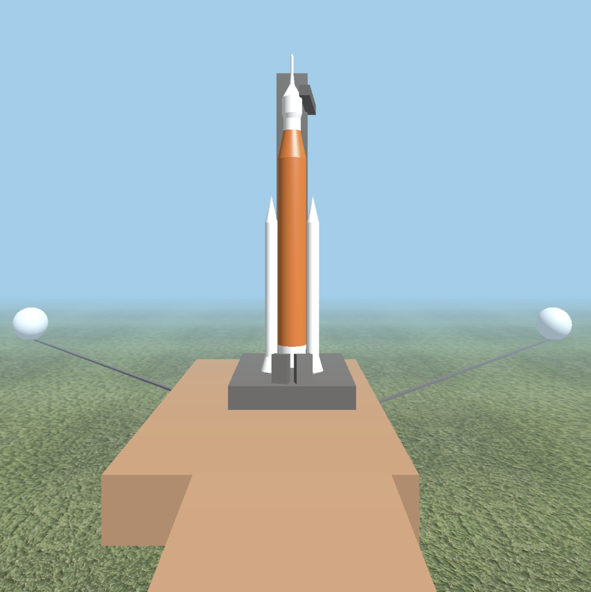
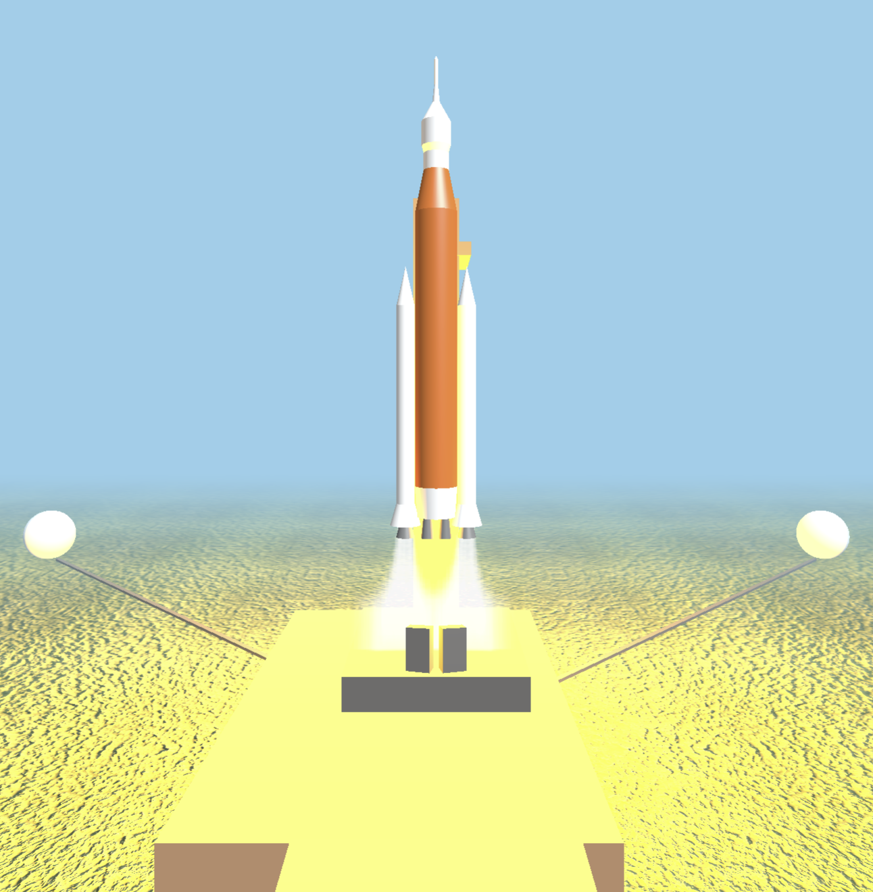
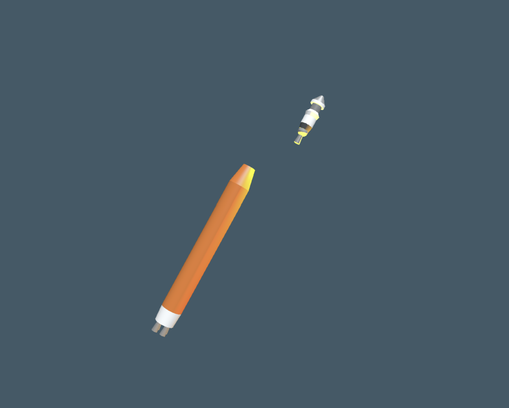

CS 360 Graphics Project by William Poe
Basic Idea
I thought of this idea because of the recent Artemis II mission and I thought creating a version of the NASA Space Launch System (SLS) in three.js would require a fair amount of work but would allow me to gain new experience and learn. This project interests me because it would also allow me to work extensively with modeling, animation, lighting, and texturing. The project would also involve many stages because rockets are complicated and have stage separation events, which would make them complex to model and animate.
This picture is what inspired me:

You might need to use the chmod command, as
needed, to ensure that the permissions for the files and
subfolders of your project folder are okay.
My Project
For this project, I tried my best to model the NASA Space Launch System (SLS) using three.js, leaving some small details out. The project turned out to be as difficult as I expected, because modeling the Solid Rocket Boosters (SRBs), Core Stage, Interim Cryogenic Propulsion Stage (ICPS), and European Service Module (ESM) separation was not an easy task. Also, adding exhaust smoke to the SRBs was slightly difficult, though I was unable to give the exhaust the volume of smoke I would have liked. An issue I encountered while working on the project was that as the height of the rocket increased, the camera would slowly zoom out and move away from the rocket, but I was able to solve this issue.
Source Code
Here is a link to the project source code.



The Running Project
Here is a link to the project itself.